RTR: Imperium Surrectum
RTR: Imperium SurrectumThe Germanic factions: Chatti, Cimbri and Lugii
2022-09-13 · Maurits
————————
Hello, everyone!
Welcome to yet another new dev diary for RTR: Imperium Surrectum (RIS) 0.5.0! Over the past few weeks, excitement has been building with ever more teasers, sneak previews, dev diaries, as well as videos having been released to reveal our wonderful new map to you all. We are currently working very hard to make sure everything is ready and balanced in time to give you a unique RR experience upon release! Of course, our new map of unprecedented size also needs to be filled out with content. Today, we are pleased to introduce our new Germanic factions to you, in the words of our dear Germanic historical expert, @Deleted User :germans: !
Our first new faction might be somewhat unfamiliar, even though this is definitely not true for its glorious offspring!
Chatti
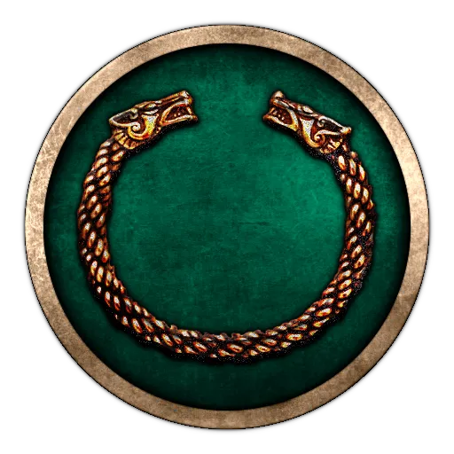
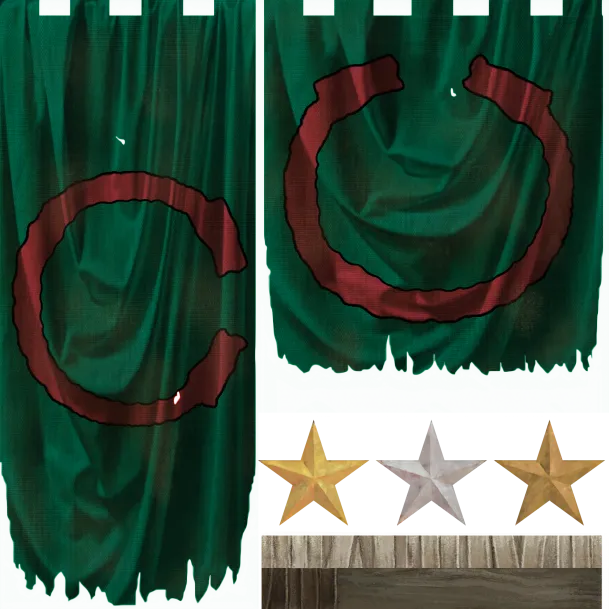
Like many other Germanic peoples, the origins and early history of the Chatti are veiled in obscurity. Strabo, writing between 7 BC and AD 23, left the oldest extant record of their existence, and later authors connect them to events no earlier than 10 BC. At that time, they occupied a vast domain, ranging all the way from the shores of the Rhine to the edge of the Hercynian Forest on the border of Bohemia. Yet, despite their vast territory, Caesar made no mention of the Chatti. Most likely they were submerged under the mighty Suebi Federation in the days of Caesar and actually acquired their later lands as partakers of the Suebi westwards expansion.
In stark contrast to their supposedly humble beginnings, the post-AD history of the Chatti was anything but unremarkable. By the end of the first century, they were already recognized by the Romans as the mightiest of all Rhine-Germanics, and that was despite a large part of the Chatti breaking off to form new nations known as the Batavi and the Canninfates. Yet, all that pales in comparison to the Chatti’s later exploits under their more familiar name: The Franks. Indeed, although the Franks were formed by the union of multiple Weser-Rhine Germanic nations, the Chatti evidently formed the foundational core of that world-shaping conglomerate.
Unlike the later Franks, who showed deference to monarchs, the early Chatti apparently elected their own officials and commanders. What Roman authors like Tacitus found particularly remarkable was that the Chatti strictly obeyed those elected leaders, and indeed relied more on the tactical expertise of their commanders than on the bravery of their warriors. Moreover, Tacitus lauded the Chatti for the impressive discipline of their armies and their methodical approach to warfare. As examples of the latter, he noted their sophisticated logistics and use of field entrenchments.
Concerning their starting situation in 270 BC, it is of course based on a reasonable estimate. Given their supposedly humble beginnings and their connection to the Suebi, they start out as a relatively small faction on the western shores of the Elbes. Yet, the Chatti got a strong potential for greatness if the Chatti armies will just find themselves under a leader worthy of his appointment.
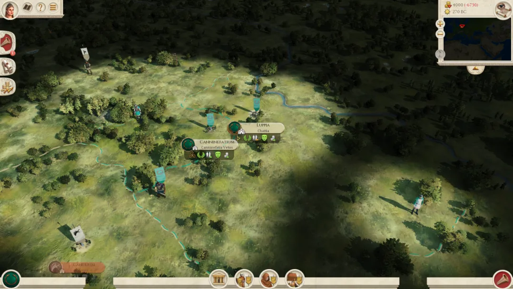
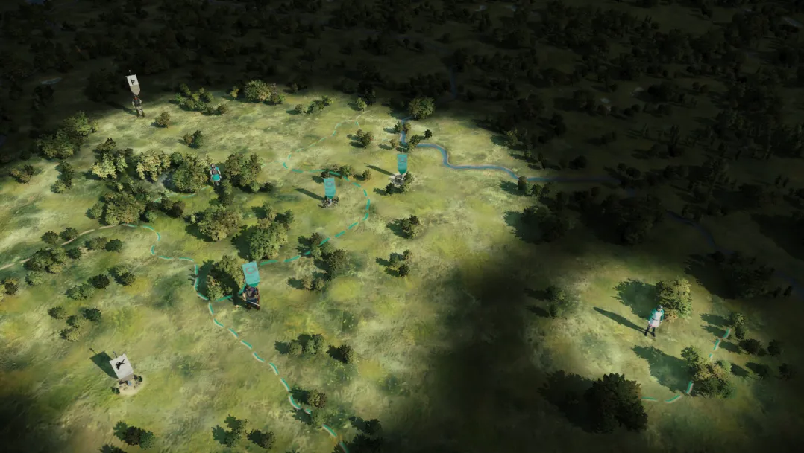
Even Rome itself still trembles when hearing the name of our second new faction:
Cimbri
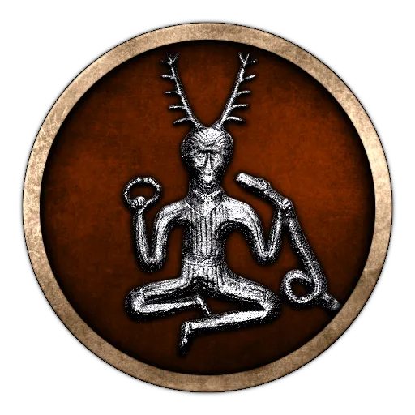
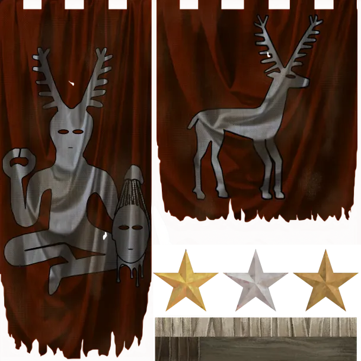
Cimbri history followed a radically different trajectory to the Chatti’s steady ascent out of obscurity unto greatness. The Cimbri seemingly appeared out of nowhere with a great army in 113 BC and inflicted defeats on the Romans that would traumatize them for centuries. And then, within little more than a decade, the Cimbri disappeared from the pages of history as suddenly as they had emerged. Certainly, Greco-Roman geographers like Strabo and Pliny the Elder later pointed towards the north of Jutland, and claimed there were still Cimbri there. However, whether or not those were the same Cimbri who had once shook Rome, they were no longer a major threat.
Who the Cimbri were and where they had come from was a contentious subject already back in the days of their war against Rome, and it remains so to this day. It is in fact not even entirely settled whether they were Germanic at all, or if they were actually Celtic. Certainly, their weaponry, way of war and the names of some of their kings appear Celtic rather than Germanic. Yet, in apparent agreement with Roman geographers, an archaeologic trail of artifacts and abandoned settlements point towards northern Jutland. A reasonable conclusion is therefore that the Cimbri migration was an avalanche of peoples that indeed begun in northern Jutland, but which dragged a plethora of nations along with it as it passed through their lands. So, what might have begun as a moderately sized Germanic army, would eventually have ended up as an immense horde that perhaps had become more Celtic than Germanic by the time it reached the borders of the Roman Republic.
The Cimbri starting position is in accordance with the above line of thought. Since it is not currently on the schedule to experiment with emerging factions, the Cimbri are represented as a Germanic faction at the northern end of Jutland. But since they just start with a single settlement, the player has the option to easily turn them into a migrating horde. Moreover, in accordance with the probable changes in ethnic composition of the Cimbri, their basic units are drawn from the Germanic roster, while their more advanced units are Celtic, instead.
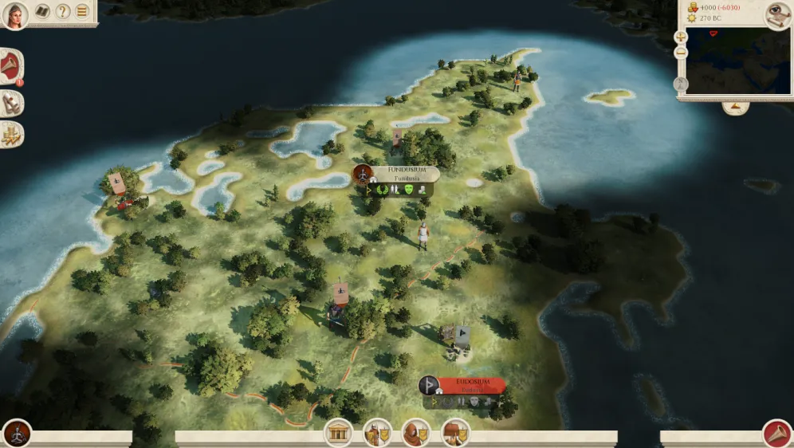
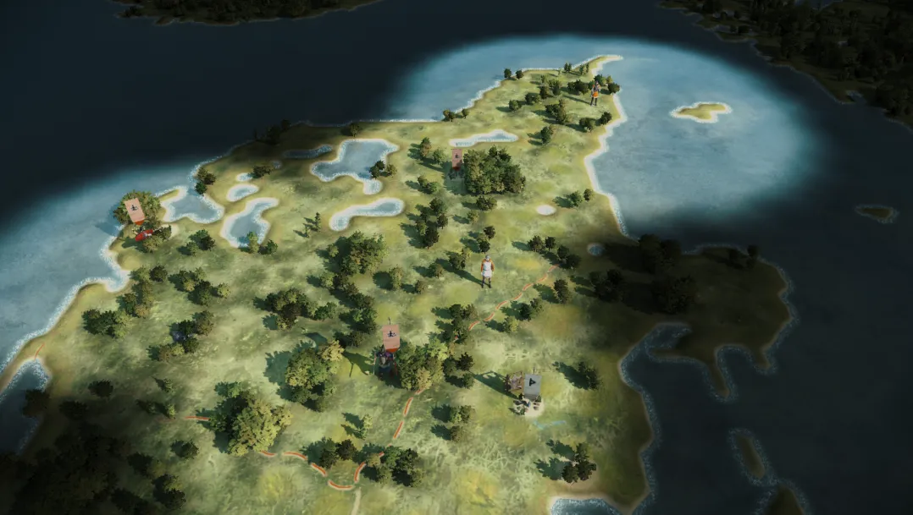
On to the last faction!
Lugii
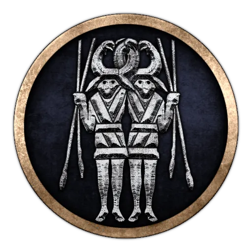
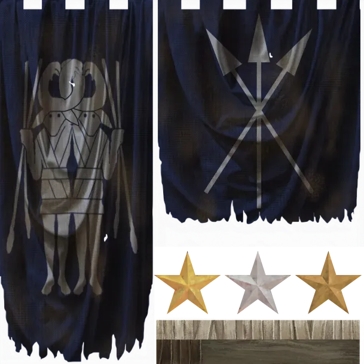
Last, but certainly not least, are the Lugii, who appear to have been the first major power in Germania. Sadly, the Lugii suffered the fate of barbarian powers far removed from Roman borders. After all, the amount of attention Roman authors paid to a barbarian polity was directly proportional to its impact on Roman affairs, and had very little relation to its actual relevance. So, due to that selection bias of Roman authors, the Lugii League may unfortunately be entirely unknown to many readers. Yet, despite the negligence of Roman writers, even the corpus of written sources contains a few hints of the permanence and power of the Lugii. For starters, that one of the kings of the Cimbri was named Lugius implies that the Lugii League was already fully formed by at least the late second century BC. Moreover, the testimony of geographers and ethnographers from the first to the mid-second centuries AD tie at least seven larger nations to the Lugii, and Tacitus suggested that the Lugii League included a multitude of smaller nations in addition to those. And lastly, given that Cassius Dio listed the Lugii among Rome’s enemies during the Marcomanni Wars, it would mean that their league persisted all the way into the late second century AD.
In contrast to the sparse written material, the archaeological record of the Lugii is perhaps the most extensive in all of Germania. Even if that is partly due to the intensity of excavation by Warszaw Pact countries during the Cold War, the material culture revealed is still impressive indeed. Judging by the archaeological surveys the Lugii lands appear to have been the most well-developed in all of Germania in the last three centuries BC and the first century AD, and the Lugii warriors were accordingly the best armed. They made frequent use of swords, mail armor and shields with iron bosses. Essentially, Lugii warriors were well furnished with all those pieces of weaponry which Roman authors had staunchly claimed that Germanic warriors were overall lacking.
Given the sparse attention paid to the Lugii by ancient sources there is little information on their political organization. Yet, based on Tacitus’ account, there is a general consensus among historians that the Lugii were a cultic league bound together by a central cult.
Even if the research situation is complicated for the Lugii, RIS aims to give justice to the strength and sophistication of the Lugii in its representation. At the present, that mainly extends to the strength of the Lugii. That means, unlike the fledgling Chatti and Suebi, the Lugii start with a grand total of five regions. However, in the interest of balance, four of those are completely undeveloped at the moment.
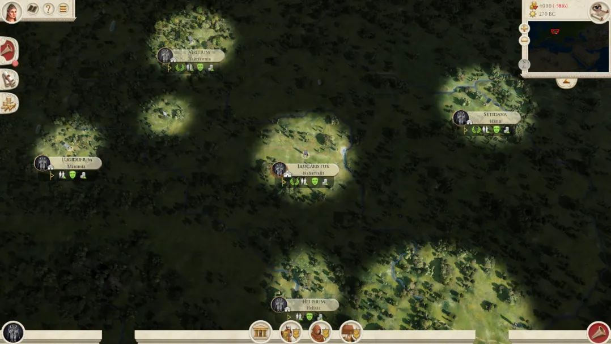
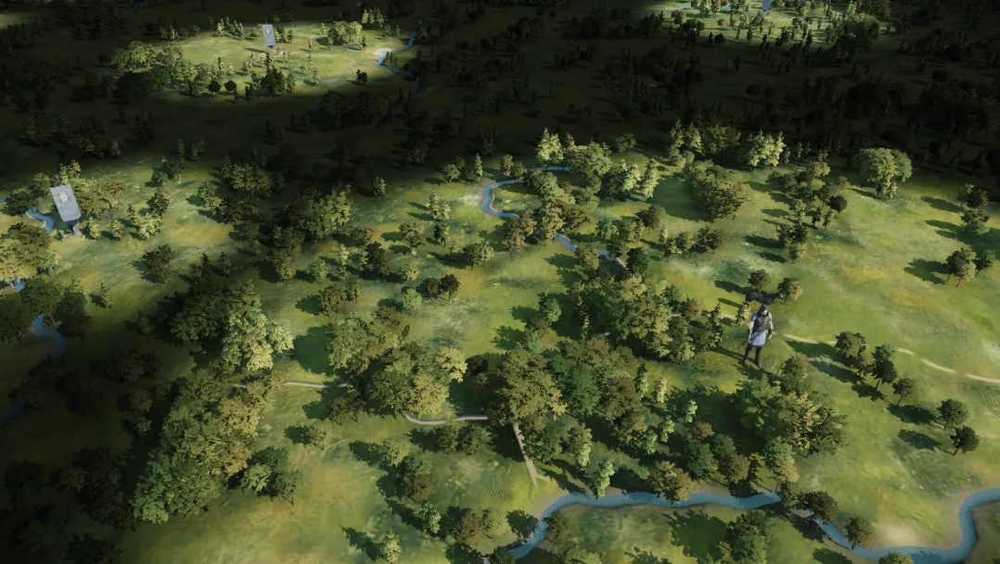
———————— With the Lugii, we conclude our presentation of the new Germanic factions. For now, these factions will all have units from old mods, such as RS2 and RTR, while their rosters are still WIP as well. Rest assured that exciting new rosters have been devised for them, though, and in the near future we will seek to expand a lot on immersive gameplay mechanics now that work has almost been finished on our beautiful new map.
Thank you and see you shortly for our next Dev Diary! ————————